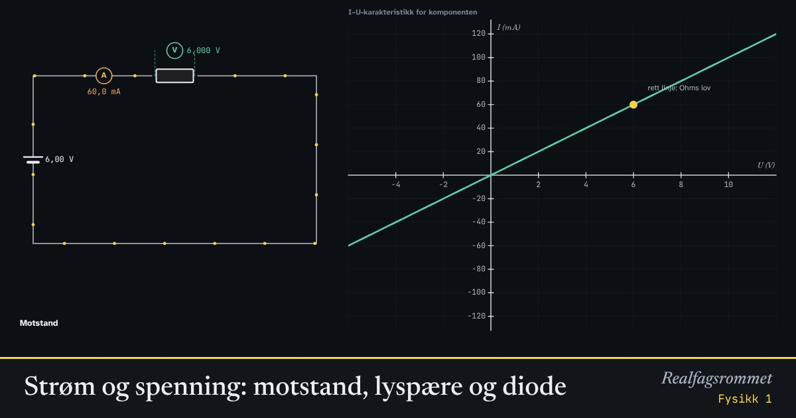

Strøm og spenning: motstand, lyspære og diode
Mål strømmen gjennom en komponent ved ulike spenninger, og tegn sammenhengen. For en vanlig motstand blir det en rett linje: Ohms lov. En lyspære og en diode oppfører seg helt annerledes.
Start animasjonen
Formler
Om animasjonen
For en vanlig motstand er strømmen proporsjonal med spenningen. Grafen blir en rett linje gjennom origo, og resistansen er konstant. Det er Ohms lov.
I en lyspære blir glødetråden flere tusen grader varm. Varme metaller har høyere resistans, så kurven bøyer av: Strømmen øker mindre enn spenningen.
En diode slipper strøm bare én vei, og først når spenningen er over omtrent 0,6 V for silisium og omtrent 1,8 V for en rød lysdiode. Derfor er det koblet en formotstand på 100 Ω i serie, ellers kunne strømmen blitt så stor at dioden ble ødelagt.
For en ledning avhenger resistansen av materialet (resistiviteten ), lengden og tverrsnittet. Dobbel lengde gir dobbel resistans, dobbelt tverrsnitt gir halv resistans.
Prøv dette
- Mål strømmen ved 3 V og 6 V for motstanden. Stemmer Ohms lov?
- Regn ut resistansen i lyspæra ved 2 V og ved 12 V. Hvorfor er den forskjellig?
- Snu spenningen for dioden. Hva skjer med strømmen?
- Hvor lang må en konstantantråd med tverrsnitt 0,2 mm² være for å få 10 Ω?
Kompetansemål
- Fysikk 1: Ladning, spenning, elektrisk energi og effekt i kretser